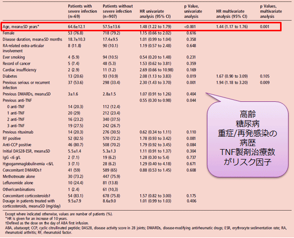
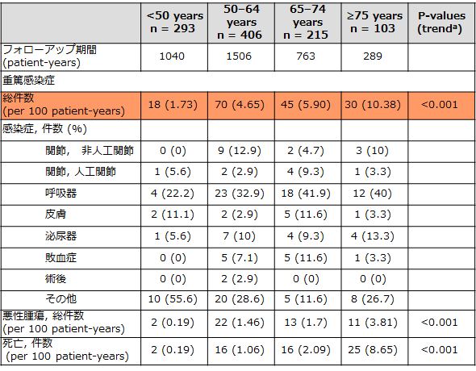

年齢が重篤な感染症リスク因子である、高齢者で感染症頻度が高くなるという報告がある（ORA registry）
●ORA registry：TNF不応例RA患者対象としたフランス多施設プロスペクティブコホート
重篤感染症リスク因子（単変量解析）

Salmon JH, et al.Ann Rheum Dis. 2016 Jun;75(6):1108-13.
重篤感染症（年齢別）

a:Taking into account the ordered nature of age groups
Lahaye C, et al. Rheumatology (Oxford). 2016 May;55(5):874-82.